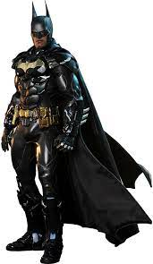
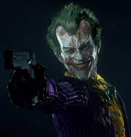

The Dark Knight
Knights
i will be ranking some Batmans
Arkham Knight
Christan bale's Batman
The Batman who laughs
2022 Batman
2016 Batman
 
villians
next are the villians
Joker
The Riddler
Scarecrow
Two Face
Harley Quin